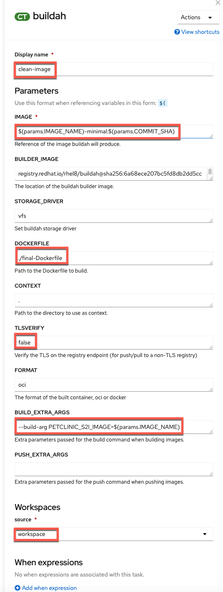

Configure PetClinic Build and Test to Meet your Organization's Requirements1¶
Now that PetClinic is up and running on your OpenShift cluster, it's time to add functionality to your pipeline to achieve basic integration and deployment when triggered. The OpenShift pipeline you created in the PetClinic Up and Running uses Tekton to run a series of tasks (each with one or more steps) to accomplish a workflow (pipeline). You will use the Pipeline Builder UI built into OpenShift to quickly and easily craft a pipeline that meets your specific needs.
Why OpenShift Pipelines?
-
Portable: OpenShift resources defined via yaml files -> portable across OpenShift clusters
-
Low Resource Usage: Containers spin up when triggered -> resources only used when needed
-
Configurable: Can tailor overall pipeline and individual tasks to needs of your enterprise/organization
-
Ease of Use: Pipeline Builder UI and built-in cluster resources (i.e.
ClusterTasks,ClusterTriggerBindings, etc.) enable you to easily create a pipeline and export the yaml files with minimal knowledge
PetClinic Pipeline¶
When you deployed the PetClinic application using the From Git option in the PetClinic Up and Running section, you chose to create a basic pipeline. You'll start with this pipeline and edit it to add new functionality for your use case.
Navigate to the Pipelines tab in the Developer perspective on the left and then click the three dots to the right of the pipeline name (spring-petclinic) and choose Edit Pipeline. 
Ensure MySQL Database Deployed for each Run¶
This will bring you to the Pipeline Builder UI where you can edit your pipeline. Here you will make sure the MySQL database is configured according to your specification before the build task.
-
Add a
mysql-deploytask in parallel to thegit-fetchtask.
Why is
mysql-deployin Parallel?This ensures MySQL is in place for each
PetClinicapplication build (which would fail without it).Click
Select Taskin the middle of the rectangle of the new task and choose theopenshift-clienttask from the dropdown menu.
Click on the middle of the oval of the
openshift-clienttask to enter values for it (copy and paste boxes below image).
Tip
Once you add a specific task (i.e.
openshift-client), clicking on the oval of the task will enable you to edit its default values for your needs.Give the task the following parameters to ensure the MySQL database is available with the necessary configuration:
Display Namemysql-deploySCRIPToc process openshift//mysql-ephemeral -p MYSQL_USER=petclinic -p MYSQL_PASSWORD=petclinic -p MYSQL_ROOT_PASSWORD=petclinic -p MYSQL_DATABASE=petclinic | oc apply -f -and an empty
ARGSvalue.No help please!
Make sure
helpis deleted from theARGSsection (click the - button to delete the default help args line).Simply Click Away
Once you have entered the string into the
SCRIPTsection and deleted the help arg, just click away (i.e. on a regular section of the page) to get the configuration menu to go away and keep the new value(s) you just entered for the task.What is
oc processdoing?oc processis processing the OpenShift template for themysql-ephemeraldatabase with the parameters given via a series of-parguments and finallyoc apply -f -ensures that any missing components will be recreated. -
Add a
mysql-rollout-waittaskYou need to make sure that
mysqlis fully deployed before yourbuildtask begins. In order to achieve this, you will use the OpenShift Client again and wait for therolloutof themysqldeploymentConfigto complete after themysql-deploytask. Add a sequential task aftermysql-deploy:
Select Taskasopenshift-clientlike before and then fill out the task with the following parameters (copy and paste boxes below image for changes): Display Name
Display Namemysql-rollout-waitARGS
Arg 1rolloutArg 2statusArg 3dc/mysqlWhat the ARGS?
You may be wondering why you used the
SCRIPTsection in themysql-deploytask for the entire command, but now are using theARGSto individually list each argument of the command? Both work and so you are going through both methods here. On the one hand, theSCRIPTmethod is easier to copy and paste and looks the same as it would entered on the command line. On the other hand, theARGSmethod adds readability to the task. Choose whichever method you prefer, though beware of input errors with theARGSmethod for long commands. FYI: The equivalentSCRIPTcommand for themysql-rollout-waittask is:oc rollout status dc/mysql
 Now your
Now your mysql-deploy and mysql-rollout tasks will have MySQL alive and well for the build task!
Make Clean Image from S2I build¶
The s2i-java-11 container image is very convenient for making a container image from source code. However, the simplicity that gives it value can make it fail at meeting the needs of many organizations by itself. In your case, you will take the artifacts from the s2i container image and copy them to a new container image that can meet all your needs to get the best of both worlds. You'll create an optimized container image starting from a compact openj9 java 11 base and employing the advanced layers feature in spring that optimizes Docker image caching with the final-Dockerfile in the ibm-wsc/spring-petclinic git repository you forked.
-
Add
BuildahtaskAdd the
buildahtask as a sequential task after thebuildtask.
-
Configure
buildahtaskTip
Each value that you need to configure is listed below with the value in a click-to-copy window (other values can be left alone to match the image)

Display Nameclean-imageIMAGE$(params.IMAGE_NAME)-minimal:$(params.COMMIT_SHA)DOCKERFILE./final-DockerfileTLSVERIFYfalseBUILD_EXTRA_ARGS--build-arg PETCLINIC_S2I_IMAGE=$(params.IMAGE_NAME)SOURCE (choose from dropdown)workspace -
Add
GIT_MESSAGE, andCOMMIT_SHAparameters to the pipelineClick
Add Parametertwice ...
and then fill in the parameter details for
GIT_MESSAGEandCOMMIT_SHA(copy and paste boxes below image)
GIT_MESSAGE
Parameter NameGIT_MESSAGEParameter DescriptionGit commit message if triggered by Git, otherwise it's a manual buildParameter Default ValueThis is a manual build (not triggered by Git)COMMIT_SHA
Parameter NameCOMMIT_SHAParameter DescriptionSHA of Git commit if triggered by Git, otherwise just update manual tagParameter Default ValuemanualTip
Save the parameters when you are done with entry by clicking on blue
Savebox before moving onto step 4. If blueSavebox doesn't appear (is greyed out) delete extra blank parameters you may have accidentally added with the-.
Summary  ¶
¶
Your pipeline will now automatically check that your MySQL instance is configured properly and rolled out before moving on to the build stage (instead of doing this as a manual task like in the previous section of the lab). Moreover, it will curate the final PetClinic (minimal) container image to only have the necessary components instead of a bunch of extra packages (required only for the build itself) that add bloat and potential security vulnerabilities to your container image. Finally, it will tag the container image to distinguish between manual builds and those triggered by a potential git push. In the next section, you will see this automation in action for your development environment.
-
For the purposes of this lab, you are fulfilling the requirements of a fictional organization. These requirements could change for your specific organization but would follow a similar pattern with different specifics. ↩
Created: May 20, 2021